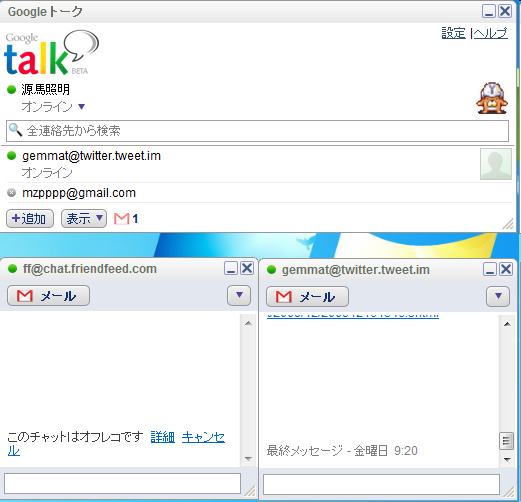

アプリケーションプラットフォーム
としてのFirefox拡張
@Gemmat teruakigemma@gmail.com
はじめに
- Firefox3 Hacksで、1年間勉強しました。
- すばらしい本をありがとう!
- dynamis様から貴重な機会をいただき、光栄です。
- Firefox3 Hacksの共著者
- Mozilla Japan テクニカルマーケティング担当
- あとでサインをください ><
J( 'ｰ`)し「パソコンで新聞読みなさい」
- パソコンといえばブラウザ
- 新聞はウェブ
- No Browser, No Life.
J( 'ｰ`)し「ヤフーでメール送ったわよ」
- 母はYahoo!メール
- 私はGMail
- デスクトップからブラウザへ
ブラウザは書き直せる

大学院の研究でFirefox拡張を使ってみた
- Windows, Mac, Linux で動いて感動
- 使いやすいGUIを簡単に実現できた。
- 使いやすいFirefoxの上で動くから。
- データベース内蔵!
- 設定システム内蔵!
- Write once, run anywhere!
- 最高のアプリケーションプラットフォーム!
なぜFirefox?(2/2)

よいプログラマーは、何を書くべきかわかっている。
偉大なプログラマは、何を書き直すべきか
(そして再利用すべきか)わかっている。
ソースを使え、ルーク!
プラットフォームの比較
中学で、Windows95のVB5.0
- おもちゃ言語
- GUIを簡単に作れた。
- Windows限定
大学で、C言語、Schemeを勉強して、GTKやSDLを触ってみた
- 本物の言語
- GUIがダメ。
- Linux限定(事実上)
GUIにありがちな問題
- スクロールすると画面が乱れる
- 日本語入力を使うとチラつく
- 窓のサイズを変えるとレイアウトがぐちゃぐちゃに
- 独自の部品を作れない
- 国際化が難しい
- Macユーザが、OK・適用・キャンセルボタンを嫌がる
Firefox拡張で全部解決。最強のGUIと言語のコンボをついに手に入れた。
最強のGUI(XUL)
最強のGUI(CSS)
最強の言語(Javascript)
- なじみやすい文法(C言語風構文)
- オブジェクト指向(Self風設計)
- 関数型言語(Scheme風設計)
Javascriptはプログラマの共通語。
Firefox拡張
- ローカルファイル読み書き、ソケット通信などが可能
- FTPクライアント、HTTPサーバ、インスタントメッセンジャだって作れる
- データベース内蔵
- 設定システム内蔵
- インストール簡単
- アップデート簡単
- 設定ウィンドウ簡単(xul:prefwindow要素)
- ウィザード簡単(xul:wizard要素)
アプリケーションプラットフォーム(1/2)
- 2chブラウザ
- ブラウザの表現力を活かす
履歴
,ブックマーク
などがそのまま使える
- はてブ拡張
- ウェブとの連動
- 内蔵データベースで高速な検索
- FTPクライアント、メディアプレーヤー、etc.
- クロスプラットフォームなGUI
- 充実した通信機能
- スキン対応
アプリケーションプラットフォーム(2/2)
- Twitterボット、サンシャイン牧場ボット
- タイマーで遅延をかけつつリクエスト連発
- レスポンスのXMLやJSONをパース
- クローラ、スクレイピング
- スイーツ(笑)なHTMLでも大丈夫
- DOM、XPathが強力
- ファイル生成
- クロスプラットフォームなファイル読み書きが強力
ウェブを改革する方法
- URIを改革する方法、独自プロトコルの定義
- HTMLを改革する方法(?)、Chromeと非特権ドキュメントでデータを交換する
- HTTPを改革する方法、拡張ならソケット通信をいじれる。
独自プロトコルの定義
こういうGUIを見たらFirefoxで独自プロトコルを定義する方法 - outsider reflexの出番 
Chromeと非特権ドキュメントでデータを交換する
- DOMNodeInsertedイベントを待つ
- セキュリティの壁ごしに、ドキュメントの様子をうかがう。安全。
マッチFOXの紹介
- Firefox拡張を始めたいあなたに。拡張の骨組みを生成。
- ORMライブラリなど同梱
- E4Xをテンプレートエンジンにしてご希望の骨組みを生成し、ファイルに書き込む
<file>
function hoge(){"{"}
alert("Hello, {Template.yourname}");
{"}"}
</file> - マッチFOX

{kind=link}
{kind=link}
{kind=link}
{kind=link}
{kind=link}
{kind=link}
{kind=link}
{kind=link}
{kind=link}
{kind=link}
{kind=link}
{kind=link}
{kind=link}